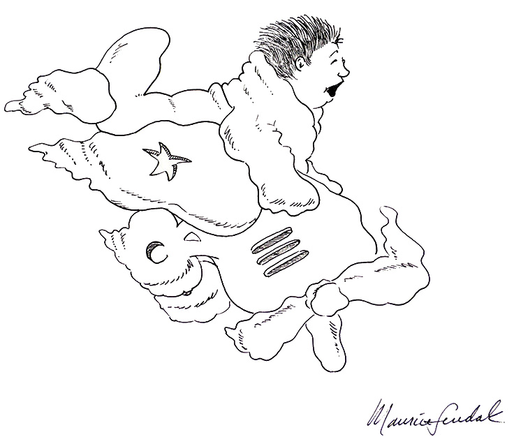

Preordering books is something I almost never do, because I'm cheap and predominantly get my books second-hand or through the library. You should preorder books, if you can, if you want to support the author just that extra little bit (next best is buying new). I received a gift certificate this last Christmas for Bookshop.org and I used it to preorder Alan Moore's I Hear A New World (Long London Book 2) because I loved the first one; it's quintessentially Moore, and it's much more commercially friendly than, say, his magnum opus Jerusalem. I also preordered Mac Barnett's Make Believe - On Telling Stories to Children.
I only know Mac Barnett through his newsletter with Jon Klassen (super genius) called Looking At Children's Books, which is always engaging, fascinating, and fun (look for their discussion on Frog and Toad especially). He endears himself to me through one of my core interests, that of the importance of telling Good, Engaging Stories. The cover of the book is illustrated by Carson Ellis. His favorite Maurice Sendak book is not Where The Wild Things Are, but In The Night Kitchen. Barnett has written tons of children's books, won awards, and is the ninth and current U.S. National Ambassador for Young People's Literature, "appointed by the Library of Congress and Every Child a Reader". These are solid credentials, so I'll take him seriously whether I'm familiar with his books or not.
A day before my book arrived—just the other day—my unusually-accute Threads algorithm showed me posts referring to a Mac, who could only be Barnett, and why the poster was "soooo DONE" with him. Scroll, scroll, scroll, ... something about 94.7% (unusually specific)... ah ha! Apparently he thinks that percentage is how much of children's literature is "crud". People, those compelled to post online, are displeased. Promotional posts on Instagram have comments such as "Read the room", indicating that these people are boycotting Barnett and his book and anyone who associates themself with Barnett. Me, I like to take a moment, read and consider the book in question, before being so freaking reactionary. Reactionaries always bug me; it's hard not to feel defensive, even if this is only the view of the vocal minority.
I find it fascinating. I started reading the book as soon as I got it because damn! Barnett must be SAYING something! He must have a proper opinion about children's literature. Maybe I won't agree with everything he has to say, but at least I know the book isn't just going to pander or be generically effusive. And the 94.7% isn't just flippant (even though the exactitude might be). He leads into that by saying 90% of all art is crud. He follows it up with incisive, specific reasoning as to the predominant types of children's literature, and how each of them does or does not serve children as they are, as people.
Frankly, dare I say it, I agree with him. Whenever I have a reason to go to the library and flip through the picture books, or peruse library book sales, I always find that—you guessed it—only about 5.3% catch my eye. But that 5.3%? SO good. Ok, honestly I think I'd be a bit more generous and say that only 5.3% are GREAT, but the curve from crud to GREAT is steep. That's me, as an adult, acknowledging my adult bias, yes; I know that kids enjoy some books that I personally think are terrible. I wouldn't want to take that away from them, though.
A major point that Barnett makes is that children's literature is inevitably, necessarily, filtered through adults. Adults are the ones with the money to buy the books, adults are the ones who author and edit and publish them. Adults are the ones writing the reviews. And adults are no longer children, have often forgotten what it was like to be a child, are impossible to imagine as a child, and yet can be so incredibly opinionated about how a child should or should not be raised. Any parent I've known knows this. Every parent receives unwanted and faulty (often patronizing, insulting), but very strong, opinions as to how they should be raising their children.
Most of the adults who are so reactionary to this 94.7% statistic I can only imagine feel personally attacked. Like Barnett is referring to them, specifically and personally, and to the quality or their work, specifically. He never calls out any specific book as bad (only, in a footnote, the dead-eyed movie version of The Polar Express), but discusses some of the best books individually and what makes them work. I'm not sure if Barnett or his publisher foresaw this backlash, but I think it's also an effective way to get people to think about the quality of the stories they tell children, and whether those stories are told for the children's benefit, or the adult's.
I may not have much stake in the game; I've illustrated two picture books, years and years ago, and would love to work on more, but probably will not for a long time to come, and I never expect to make a living off them. I would urge anyone with an interest in children's literature to take the 94.7% as a CHALLENGE. Even if you don't agree with anything he says. Work harder, with more intention, even maybe with more spite, to prove him wrong. You may sell better, be reviewed better, or not. But you will have put in more intention and effort and that's how we get better at anything.
Writing and illustrating children's books is not easy: they are just as worthy of consideration as literature (as literature, without the "children's" qualification), as "adult" literature. It's a mistake to think of them as "small adults", but even so, children are at least as complex of a creature as adults. They are people, same as anybody.
The preceding paragraphs were written when I was only, um, about halfway through the book. Finish reading the book before giving an opinion, man! But I was so revved up by the minor controversy and have had so many thoughts (which is one of my criteria as to what makes a good book). Those thoughts stand. So: what are my overall thoughts now that I've actually finished it?
Lo and behold, to begin, I find I am familiar with some of Mac Barnett's books, but always thought of them as Jon Klassen books, since Klassen's illustrations are so recognizable and I was familiar with the books he wrote and illustrated. Shame on me for not paying attention to who the author was!
Make Believe - On Telling Stories to Children should be required reading for anyone interested in children's literature, whether they're in the industry or not: parent, teacher, librarian, editor, author, illustrator, publisher, critic, and/or general enthusiast. In a book that's just shy of 100 pages there was always going to be omissions, always issues not discussed or glossed over. It's a shame that one statistic seems to overshadow the rest of the text for so many people. Even if you disagree with what Barnett is saying, there's a lot of powerful conversations to be had (with yourself, even).
Ultimately what I love the most about the book is that Mac Barnett is less concerned with the industry than he is with writing good, engaging books for kids. His focus is the art and how it applies to the intended audience. Focusing on the importance of acknowledging the complexity of kids' lives and the need to meet them where they are, not where adults think they should be.
NB: A note to address a couple of the issues I've seen brought up, because those issues do seem to have enough merit to not brush aside: First up is the idea that, as National Ambassador for Young People's Literature, Barnett shouldn't've dismissed all but 5.3% of existing children's literature. Personally I have no idea of what is required or expected of a NAYPL, so I don't feel particularly qualified to offer an opinion of how advisable that was. Secondly, I've seen comments about how many books from minority groups are often dismissed as "didactic" (which Barnett is against) and this view is used to suppress such books. I highly doubt this is what Barnett is advocating. Clearly there needs to be way more representation in all of children's literature. But I can absolutely see where it's an issue in the industry, and that's what it comes down to: the industry is where all of these issues ultimately lie. My opinions still stand, as it applies overall to children's literature and how the industry should move forward.